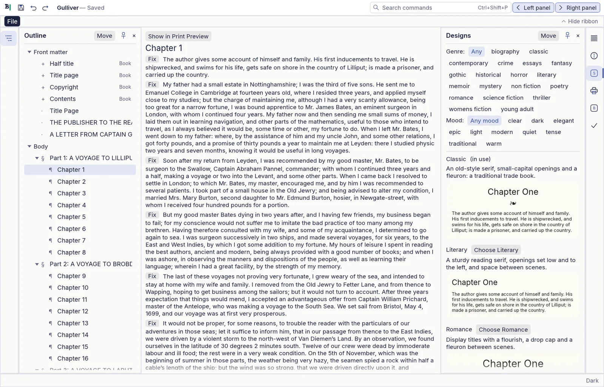
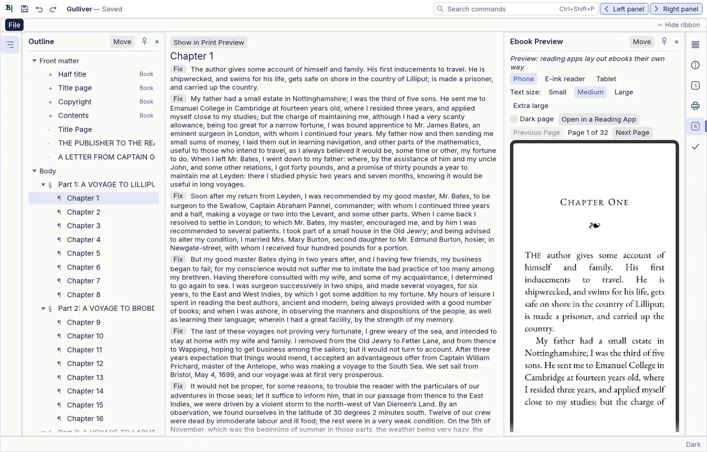
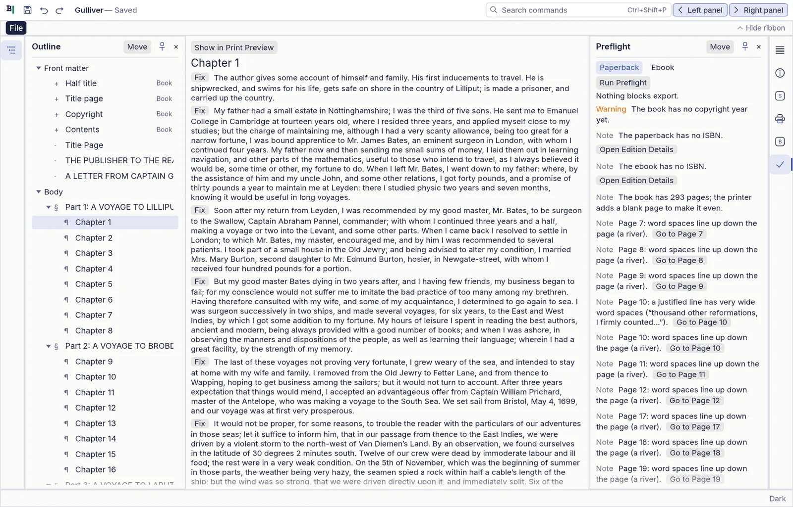
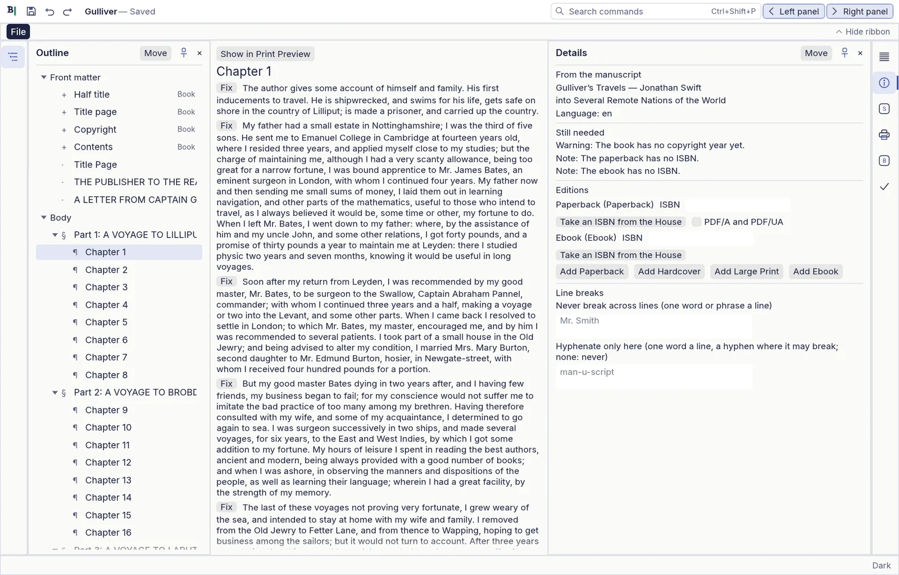

a Wordsmith & Ink app
From manuscript to a book you'd be proud to sell.
A free, open-source app for designing and typesetting books. Bring a finished manuscript, choose a design, set the trim size and the front and back matter, and export a print-ready PDF and an accessible ebook, with every word checked against your source.

What it does
Beautiful by default. Ready to print and to sell.
For independent authors and small presses: a typeset book and a clean ebook from the same manuscript, without learning typesetting.
Bring the manuscript
Link a Wordsmith Manuscript project, which Book reads and never changes, or import Word, OpenDocument, RTF, Markdown, plain text or EPUB. Chapters, parts and scene breaks are found for you, and you review them first.
Book designs
Thirteen designs, from Classic and Literary to Fantasy, Poetry and Large Print, each previewed with your own first chapter. Mix parts of two designs, save your own, and share it as a file.
Front and back matter
A half title, title page, copyright page and contents made from your book's details, and a dedication, epigraph, about the author, "also by" and more, each put where convention has it.
Print-ready PDF
Eighteen trim sizes, mirrored margins with a gutter that grows with the page count, paperback and hardcover profiles, bleed, footnotes on the page, and a large-print edition of any design.
Ebooks
EPUB 3.3 with a table of contents, accessibility metadata and alternative text for pictures, embedded fonts where their licenses allow, pop-up notes and the print edition's page numbers.
Preflight
Builds an edition and reads the file back: page size and margins, embedded fonts, picture resolution, the cover, ISBNs and every word against the source. Each finding links to its page or setting.
Cover template
The full-wrap cover template for your page count and paper, with the spine, bleed, safe areas and barcode area marked, and a check of the cover you bring.
Editions
A paperback, a hardcover, a large-print edition and an ebook from one book, each with its own ISBN. Add an ebook edition per store, each carrying only its own links.
Your words, untouched
Typographic cleanup (curly quotes, dashes, ellipses) is shown change by change and can be undone. A fix to a linked manuscript is offered back to the writer, never written into it.
A closer look
Choose, preview, check, export.




For a small press too
One author or a whole catalogue.
A press keeps its imprints, its series and the ISBNs it owns in one house file. An imprint or a series can lock its design, so every book matches, and builds run from the command line, the same way every time.
- Title and copyright pages from the imprint, with its logo and wording
- A series line, an "Also by" list in order, and box sets with one contents
- Each ISBN checked and given once, and an ONIX 3.0 record for distributors
- The same project gives the same files, byte for byte, every time
- A command line that builds, checks and verifies without the window
- The interface comes in English and Spanish
Download
Get Wordsmith Book.
Downloads for each system are published on the app's releases page on GitHub.
The first time you open it
The apps are not signed with a paid developer certificate, so macOS and Windows ask before they open one for the first time.
- macOS: open the app once and close the notice. Then open System Settings, choose Privacy & Security, and click Open Anyway.
- Windows: on the “Windows protected your PC” notice, click More info, then Run anyway.
Free, and yours to check
Wordsmith Book costs nothing and needs no account. Downloads come only from the app's own releases on GitHub. Wordsmith Book releases on GitHub.
The code is open source. To build the app yourself, follow the README in its repository.